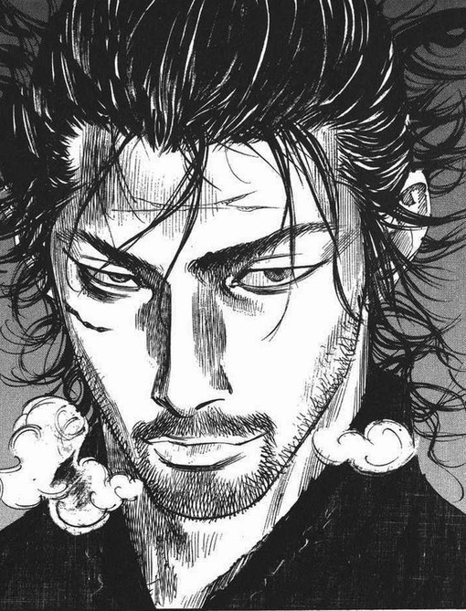
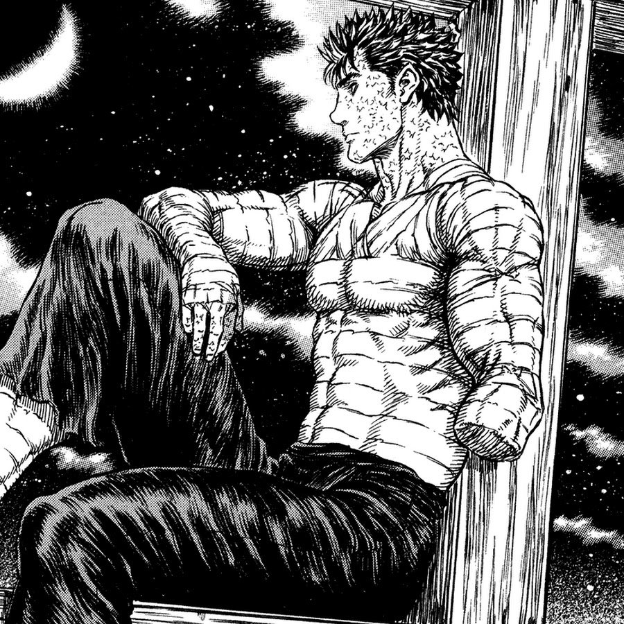

Переведённый ученик, которого побудили взобраться на здание школы.
Достигнув вершины, он испытал неведанное до этого чувство эйфории и заинтересовался скалолазанием. Он одиночка, утверждающий, что не нуждается в друзьях.
И кажется, что ему пришлось пройти через многое в прошлом.
Предпочитает подниматься на гору в одиночку, нежели с партнёром.
Миямото Мусаси『宮本 武蔵』 — имя, данное Сохо Такуаном ещё молодому Такедзо. Миямото - деревня, в которой он родился и вырос, Мусаси же - китайский вариант прочтения иероглифов его имени. Получив новый "псевдоним", Синмен стал скитаться по Японии, сражаясь с огромным количеством воинов.
Известный как «Чёрный мечник», — бывший наёмник — клеймённый странник, который путешествует по миру в постоянной внутренней борьбе между преследованием собственных целей и поддержанием своих привязанностей к тем, кто ему дорог.
